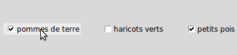

Les cases à cocher (parfois appelé «checkbox») permettent à l’utilisateur d’effectuer des choix. L’illustration ci-dessous montre trois cases à cocher dont deux sont cochées (état “on”: 1) et une est décochée (état “off”: 0).
L’indicateur est la partie de la case à cocher qui indique son état, et l’étiquette est le texte qui apparaît à côté.
Pour créer une case à cocher dans une fenêtre ou un cadre nommé parent:
Le constructeur renvoie un nouveau widget Checkbutton. Les options incluent:
| Paramètres: |
|
|---|
Les cases à cocher incluent les méthodes suivantes:
Décoche la case à cocher (off).
Fait clignoter la case à cocher quelques fois (entre les couleurs des états 'active' et 'normal'). Elle retrouve son état initial après le clignotement.
Utilisez cette méthode si vous souhaitez réaliser la même action que celle qui consiste à cliquer sur la case pour changer son état.
Coche la case à cocher (on).
Coche ou décoche la case à cocher selon son état courant.